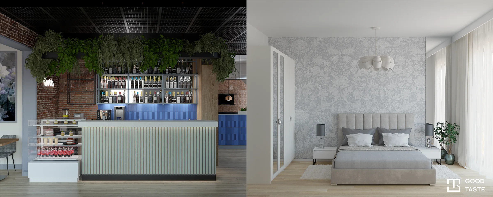

Restauracja Nowwa Wrocław
O projekcie Restauracja Nowwa Wrocław
Restauracja Nowwa Wrocław
O projekcie Restauracja Nowwa Wrocław

Projekty technologiczne Projekty mieszkań
Good Taste · Wrocław i Dolny Śląsk
Projektowanie wnętrz i projekty technologiczne gastronomii
Przestrzeń w dobrym guście. Projektujemy wnętrza mieszkań i lokale gastronomiczne z myślą o ich codziennym użytkowaniu. Poznaj nasze projekty i porozmawiajmy o Twojej przestrzeni na Dolnym Śląsku.
Portfolio / 01
Projekty technologiczne gastronomii
Restauracja, bar, punkt gastronomiczny — każda przestrzeń łączy potrzeby gości z organizacją pracy. Zobacz projekty Good Taste, w tym restaurację Nowwa we Wrocławiu.
Poznaj projekty technologiczne gastronomii
Restauracja Nowwa Wrocław
O projekcie Restauracja Nowwa Wrocław
 Dobry Kebab Słubice
O projekcie Dobry Kebab Słubice
Dobry Kebab Słubice
O projekcie Dobry Kebab Słubice
Portfolio / 02
Projektowanie wnętrz mieszkań
Od wspólnej przestrzeni salonu i kuchni po sypialnię i łazienkę. Zobacz różne pomysły na materiały, światło i przechowywanie, między innymi w mieszkaniu na Kępie Mieszczańskiej.
Poznaj projektowanie wnętrz we Wrocławiu i na Dolnym Śląsku


Twój projekt na Dolnym Śląsku
Planujesz wnętrze mieszkania lub lokal gastronomiczny we Wrocławiu albo w innej miejscowości regionu? W pierwszej wiadomości podaj lokalizację, metraż i planowany termin. Dołącz rzut, jeśli go masz — łatwiej będzie porozmawiać o potrzebach i zakresie projektu.
Porozmawiajmy o projekcie
Wrocław i Dolny Śląsk
Kontakt
Porozmawiajmy o Twoim projekcie. Podaj miejscowość, metraż i planowany termin.
Napisz do nasAdres e-mail wkrótce
ZadzwońNumer telefonu wkrótce
Obserwuj nasFacebook — wkrótce